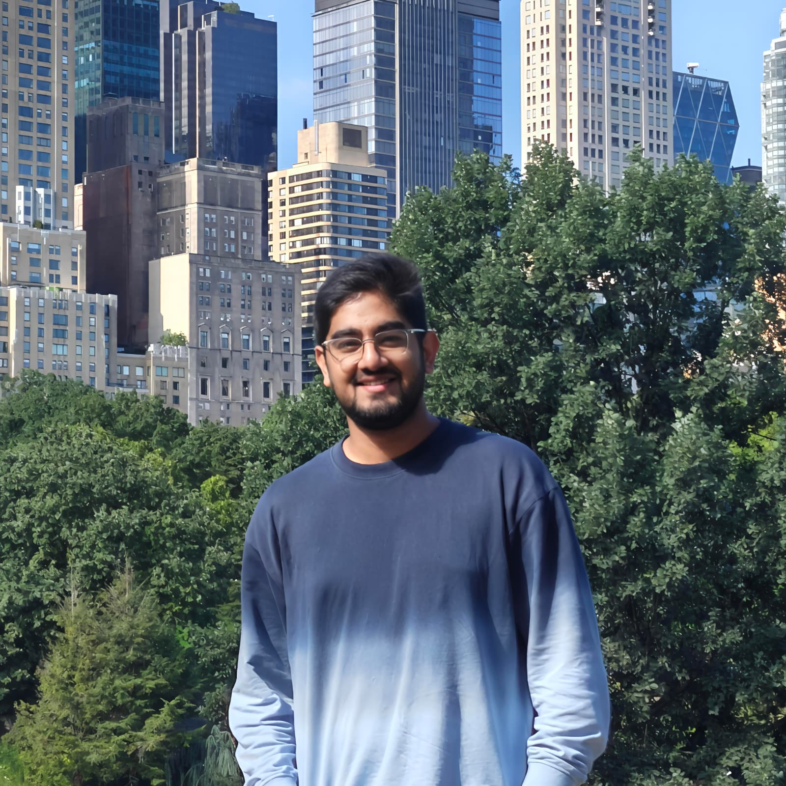
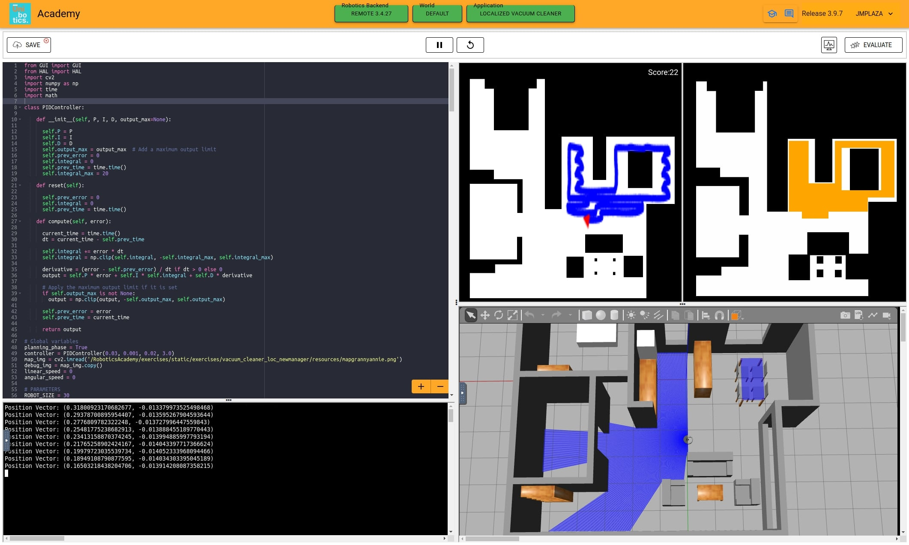

I'm currently pursuing a Master's in Robotic Systems Development at Carnegie Mellon University, home to the Robotics Institute.
Previously, I was a Research Associate at the Robotics Research Center (RRC), IIIT Hyderabad advised by Prof. Madhava Krishna. My work focused on advancing grasp planning and manipulation algorithms.
Prior to my research role, I worked as a Firmware Development Engineer at Cradlepoint (now Ericsson Enterprise Wireless Solutions). I have also worked with JdeRobot through Google Summer of Code, working with Prof. Jose Maria Canas Plaza and Pedro Arias Pérez on the open source software Robotics Academy.
I'm a Computer Science Engineering graduate specializing in AI/ML and Robotics. During my undergrad I worked extensively with Team RUDRA - SRM Mars Rover, Building the Robotics and Computer Vision stack.
Beyond robotics, I'm passionate about badminton and running. Feel free to reach out - I'd love to connect!
Ajit Srikanth∗,
Parth Mahajan∗,
Kallol Saha∗,
Vishal Mandadi∗,
Pranjal Paul†,
Pawan Wadhwani†,
Brojeshwar Bhowmick,
Arun Singh,
Madhava Krishna
International Conference on Automation Science and Engineering (CASE), 2025
Page •
Video

Improving Usability of a Web-Based Platform for Teaching Robotics Engineering
Lía García-Pérez,
David Roldán,
Enric Cervera,
Pawan Wadhwani,
José M. Cañas
Robotics in Education (RiE), April 2024
Proceedings
Prateek,
Pawan Wadhwani,
Reshesh Kumar Pathak,
Mayur Bhosale,
A Helen Victoria
International Conference on Robotics and Automation Engineering (ICRAE), November 2022
Proceedings •
ArXiv •
Video
Pawan Wadhwani,
Atirav Seth,
CheHsuan Lee,
Gautam Balaji,
Narayanan Palghat Parameswaran
MRSD capstone project at Carnegie Mellon University
Report •
Video
Pawan Wadhwani,
Atirav Seth,
Shreenabh Agrawal,
Aayush Agrawals,
Prakhar Mishra
Project for Robot Autonomy course at Carnegie Mellon University
Report •
Video
Pawan Wadhwani,
Adi Thummala,
Alis Bao,
Jingxuan Duan
Project for F1-Tenth Autonomous Driving course at Carnegie Mellon University
Video
Under the mentorship of Pedro Arias Pérez, Prof. Jose Maria Canas Plaza and L. Roberto
Page •
Report •
Video
Student research team at SRM Institute of Science and Technology
Page •
Video
Pawan Wadhwani,
Akankshi Vaishya,
Prateek,
Reshesh Kumar Pathak,
Mayur Bhosale,
Antariksh Ray,
Technology Infusion Grand Challenge Asia, Dec 2021, La Trobe University
Video
Pawan Wadhwani(Team Lead),
Nishchay Pagarani,
Shashwat Vyas,
Chaitanya Vyas
International Robotics Competition, Jun 2017, Beijing, China
Video
Template borrowed from Cheng Chi's personal page